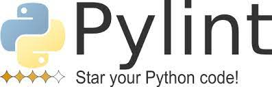
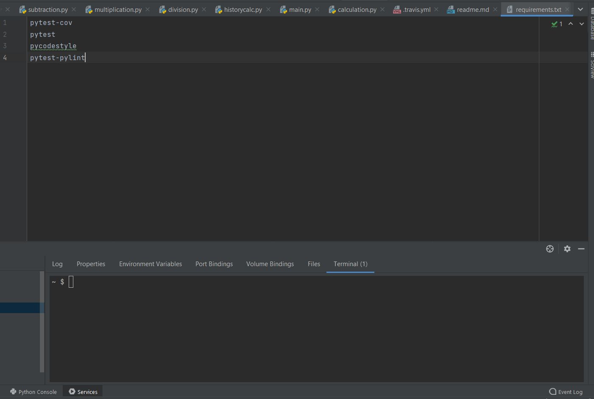
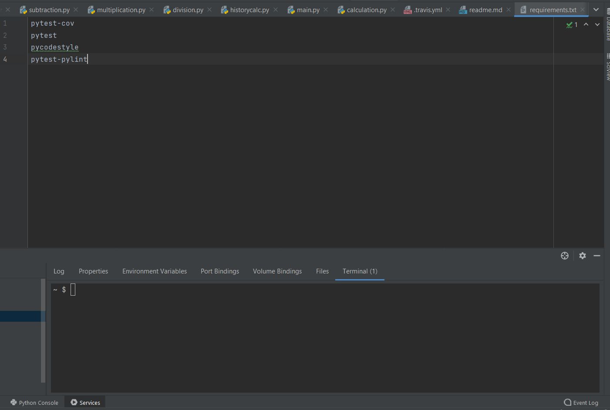
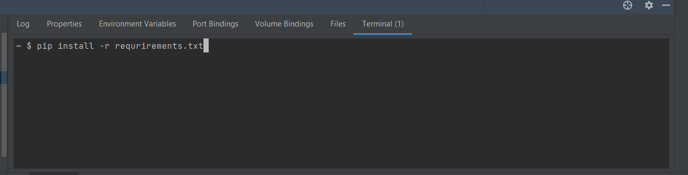
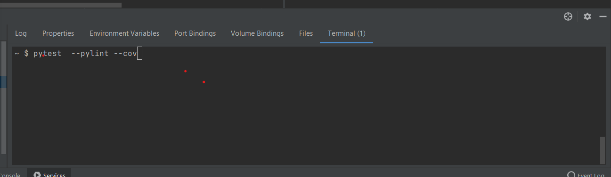
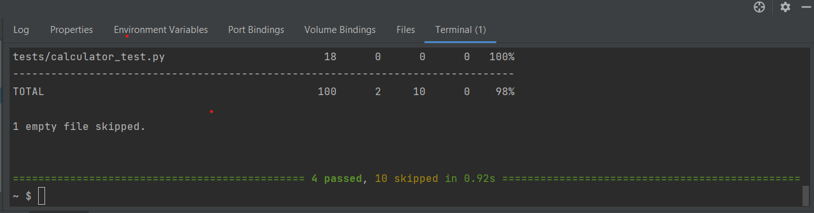

Article 1
Pylint
Pylint is a tool that checks for errors in Python code, tries to enforce a coding standard and looks for code smells. It can also look for certain type errors, it can recommend suggestions about how particular blocks can be refactored and can offer you details about the code's complexity.
Code Quality could include sensible programming logic, correct spelling in comments, more idiomatic Python constructs, variable names that match a particular style guide, etc. Also, developers use Pylint to beautify even a small piece of Python code.
Code Quality could include sensible programming logic, correct spelling in comments, more idiomatic Python constructs, variable names that match a particular style guide, etc. Also, developers use Pylint to beautify even a small piece of Python code.
Steps For Installation of Pylint
Pylint can installed on any systems like windows, mac, Unix. On executing the below steps, the pylint executable becomes available at the native command line.
 1.Specify the requirements for the pylint in the requirement.txt file in the project.
 1.Specify the requirements for the pylint in the requirement.txt file in the project.

2. Execute the following command: pip install -r requirements.txt

3. After installation, To run tests, Lint, and Coverage report use this command: pytest --pylint --cov

4. After execution of above command, we can see the following output
Glossary
- Factory method: Factory Method is a creational design pattern that provides an interface for creating objects in a superclass, but allows subclasses to alter the type of objects that will be created.
- Instantiation: To instantiate is to create an instance of an object in an object-oriented programming (OOP) language. An instantiated object is given a name and created in memory or on disk using the structure described within a class declaration.
- Object: An object is an instance of a class
- Class: In Object oriented programming , a class is a blueprint for creating objects (a particular data structure), providing initial values for state (member variables or attributes), and implementations of behaviour (member functions or methods).
- Namespace A namespace is designed to overcome this difficulty and is used as additional information to differentiate similar functions, classes, variables etc. with the same name available in different libraries.
- Constructor: Constructors are generally used for instantiating an object. The task of constructors is to initialize(assign values) to data members of the class when an object of the class is created. In pyton the __init__() method is called the constructor and is always called when an object is created.
- Type hint: Type hinting is a formal solution to statically indicate the type of a value within your Python code. It was specified in PEP 484 and introduced in Python 3.5. Here's an example of adding type information to a function.
- Typecast: Typecasting, or type conversion, is a method of changing an entity from one data type to another. It is used in computer programming to ensure variables are correctly processed by a function.
- Unit testing: Unit testing involves testing individual components of the software program or application. The main purpose behind this is to check that all the individual parts are working as intended. A unit is known as the smallest possible component of software that can be tested. Generally, it has a few inputs and a single output.
- Class method: A class method is a method which is bound to the class and not the object of the class. They have the access to the state of the class as it takes a class parameter that points to the class and not the object instance. It can modify a class state that would apply across all the instances of the class.
- Facade: Facade is a structural design pattern that provides a simplified interface to a library, a framework, or any other complex set of classes.
- Design pattern: In software engineering, a design pattern is a general repeatable solution to a commonly occurring problem in software design.